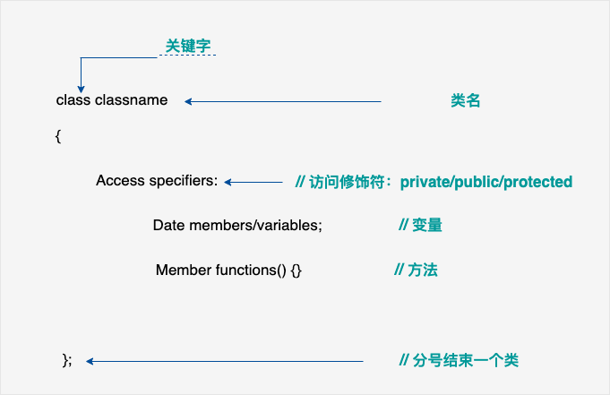

C
1 数据类型
1.1 基本数据类型
它们是算术类型
- int 整型
- char 字符型
- float 浮点型
- double 双精度浮点型
1.2 枚举类型
也是算术类型
只能赋予其一定的离散整数值的变量
1.3 void 类型
表明没有值的数据类型
1.4 派生类型
- 数组类型
- 指针类型
- 结构体类型
各种类型的存储大小与系统位数有关，但目前通用的以64位系统为主。
以下列出了32位系统与64位系统的存储大小的差别（windows 相同）：

1.5 强制类型转换
- 隐式类型转换：隐式类型转换是在表达式中自动发生的，无需进行任何明确的指令或函数调用。它通常是将一种较小的类型自动转换为较大的类型，例如，将int类型转换为long类型或float类型转换为double类型。隐式类型转换也可能会导致数据精度丢失或数据截断。
- 显式类型转换：显式类型转换需要使用强制类型转换运算符（type casting operator），它可以将一个数据类型的值强制转换为另一种数据类型的值。强制类型转换可以使程序员在必要时对数据类型进行更精确的控制，但也可能会导致数据丢失或截断。
/*隐式类型转换实例*/ int i = 10; float f = 3.14; double d = i + f; // 隐式将int类型转换为double类型 /*显式类型转换实例*/ double d = 3.14159; int i = (int)d; // 显式将double类型转换为int类型
2 C常量
2.1 整数常量
整数常量可以是十进制、八进制或十六进制的常量。前缀指定基数：0x 或 0X 表示十六进制，0 表示八进制，不带前缀则默认表示十进制。
整数常量也可以带一个后缀，后缀是 U 和 L 的组合，U 表示无符号整数（unsigned），L 表示长整数（long）。后缀可以是大写，也可以是小写，U 和 L 的顺序任意。但是不能重复。
212 /* 合法的 */ 215u /* 合法的 */ 0xFeeL /* 合法的 */ 078 /* 非法的：8 不是八进制的数字 */ 032UU /* 非法的：不能重复后缀 */ /*下面是各种类型的整数常量的实例*/ 85 /* 十进制 */ 0213 /* 八进制 */ 0x4b /* 十六进制 */ 30 /* 整数 */ 30u /* 无符号整数 */ 30l /* 长整数 */ 30ul /* 无符号长整数 */
2.2 浮点常量
- 浮点常量由整数部分、小数点、小数部分和指数部分组成。您可以使用小数形式或者指数形式来表示浮点常量。
- 当使用小数形式表示时，必须包含整数部分、小数部分，或同时包含两者。当使用指数形式表示时， 必须包含小数点、指数，或同时包含两者。带符号的指数是用 e 或 E 引入的。
/*浮点常量的例子*/ 3.14159 /* 合法的 */ 314159E-5L /* 合法的 */ 510E /* 非法的：不完整的指数 */ 210f /* 非法的：没有小数或指数 */ .e55 /* 非法的：缺少整数或分数 */
2.3 字符常量和字符串常量
- 字符常量是记录在在单引号中的
字符常量可以是一个普通的字符（例如 'x'）、一个转义序列（例如 '\t'），或一个通用的字符（例如 '\u02C0'）.在 C 中，有一些特定的字符，当它们前面有反斜杠时，它们就具有特殊的含义，被用来表示如换行符（\n）或制表符（\t）等。- 字符串常量是记录在双引号中的
2.4 定义常量
- 使用 #define 预处理器： #define 可以在程序中定义一个常量，它在编译时会被替换为其对应的值。
- 使用 const 关键字：const 关键字用于声明一个只读变量，即该变量的值不能在程序运行时修改。
/*把常量定义为大写字母形式，是一个很好的编程习惯*/ /*define 定义常量*/ #define 常量名 常量值 #define PI 3.14159 /*const 定义常量*/ const 数据类型 常量名 = 常量值; /*下面的代码定义了一个名为MAX_VALUE的常量：*/ const int MAX_VALUE = 100;
2.4.1 #define 与 const 区别
#define 与 const 这两种方式都可以用来定义常量，选择哪种方式取决于具体的需求和编程习惯。通常情况下，建议使用 const 关键字来定义常量，因为它具有类型检查和作用域的优势，而 #define 仅进行简单的文本替换，可能会导致一些意外的问题。#define 预处理指令和 const 关键字在定义常量时有一些区别：
- 替换机制：#define 是进行简单的文本替换，而 const 是声明一个具有类型的常量。#define 定义的常量在编译时会被直接替换为其对应的值，而 const 定义的常量在程序运行时会分配内存，并且具有类型信息。
- 类型检查：#define 不进行类型检查，因为它只是进行简单的文本替换。而 const 定义的常量具有类型信息，编译器可以对其进行类型检查。这可以帮助捕获一些潜在的类型错误。
- 作用域：#define 定义的常量没有作用域限制，它在定义之后的整个代码中都有效。而 const 定义的常量具有块级作用域，只在其定义所在的作用域内有效。
- 调试和符号表：使用 #define 定义的常量在符号表中不会有相应的条目，因为它只是进行文本替换。而使用 const 定义的常量会在符号表中有相应的条目，有助于调试和可读性。
下面的表述可以更清晰地了解二者的区别

3 存储类
3.1 auto 存储类
auto 存储类是所有局部变量默认的存储类。定义在函数中的变量默认为 auto 存储类，这意味着它们在函数开始时被创建，在函数结束时被销毁。
3.2 register 存储类
在C语言中，register是一种存储类（storage class），用于向编译器提示将变量存储在寄存器中，以便提高访问速度。然而，需要注意的是，register只是一种建议，编译器可以选择忽略它。
以下是有关register存储类的详细说明：
- 声明：可以使用
register关键字在变量声明时指定该变量的存储类。例如：
register int x;
这将提示编译器将变量x存储在寄存器中。
-
可寄存器的类型：通常，只有较小的整数类型（如
int、char）或指针类型的变量才能存储在寄存器中。对于较大的数据类型（如结构体或数组），编译器通常会忽略register关键字。 -
可寄存器的数量：由于寄存器数量有限，所以无法保证所有使用
register关键字声明的变量都会被存储在寄存器中。编译器将根据需求和可用的寄存器来决定哪些变量应存储在寄存器中。 -
地址访问：由于寄存器是在CPU内部存储数据的临时位置，无法直接访问寄存器的地址。因此，不能使用指针或取地址运算符（
&）来获取寄存器中变量的地址。 -
限制和建议：尽管使用
register关键字可以提高访问速度，但在现代的编译器中，它的作用已经减弱。编译器通常能够自动识别并进行优化，因此手动使用register并不能保证性能的提升。在大多数情况下，编译器能够更好地优化代码，因此不建议过度使用register关键字。
需要注意的是，C99标准中已经将register关键字废弃为保留字，因此在新的代码中，register关键字已经失去了原有的含义。现代编译器往往会忽略register关键字，并根据需要自动进行寄存器分配。
4 函数
4.1 static 和 extern 函数
static函数只能在本文件中使用，不能在外部使用- 在定义文件的时候，如果加上
extern则表示函数可以在外部使用，如果不加，则可以被外部引用
4.2 inline函数(内联函数)
内联函数是指用inline关键字修饰的函数。在类内定义的函数被默认成内联函数。内联函数从源代码层看，有函数的结构，而在编译后，却不具备函数的性质。
内联扩展是用来消除函数调用时的时间开销。它通常用于频繁执行的函数，对于小内存空间的函数非常受益。
使用内联函数的时候要注意：
- 递归函数不能定义为内联函数
- 内联函数一般适合于不存在while和switch等复杂的结构且只有1~5条语句的小函数上，否则编译系统将该函数视为普通函数。
- 内联函数只能先定义后使用，否则编译系统也会把它认为是普通函数。
- 对内联函数不能进行异常的接口声明。
4.3 main 函数
int main( int argc, char *argv[] )
上面的代码中 main 函数带了参数。
但是有时又会看见main函数没有参数，如下：
int main()
那么 main 函数到底有没有参数，有没有参数会不会有什么影响？
main 函数其实与我们写的函数没有什么区别，它也会有自己的参数。
argc 和 argv 是 main 函数的形式参数。
这两个形式参数的类型是系统规定的。如果 main 函数要带参数，就是这两个类型的参数；否则main函数就没有参数。
变量名称argc和argv是常规的名称，当然也可以换成其他名称。在传入参数后main函数收到参数后就会做自己的事。那么，实际参数是如何传递给main函数的argc和argv的呢？我们知道，C程序在编译和链接后，都生成一个exe文件，执行该exe文件时，可以直接执行；也可以在命令行下带参数执行，命令行执行的形式为：可执行文件名称 参数1 参数2 ... ... 参数n。可执行文件名称和参数、参数之间均使用空格隔开。
如果按照这种方法执行，命令行字符串将作为实际参数传递给main函数。具体为：
(1) 可执行文件名称和所有参数的个数之和传递给 argc；
(2) 可执行文件名称（包括路径名称）作为一个字符串，首地址被赋给 argv[0]，参数1也作为一个字符串，首地址被赋给 argv[1]，... ...依次类推。
5 数组
5.1 数组的大小、地址和初始化
5.1.1 数组的初始化
对于数组的初始化需要注意以下几点：
-
可以只给部分元素赋值，当 { } 中值的个数少于元素个数时，只给前面部分元素赋值。例如：
int a[10]={12, 19, 22 , 993, 344};
表示只给 a[0]~a[4] 5 个元素赋值，而后面 5 个元素自动初始化为 0。当赋值的元素少于数组总体元素的时候，不同类型剩余的元素自动初始化值说明如下：
对于 short、int、long，就是整数 0；
对于 char，就是字符 '\0'；
对于 float、double，就是小数 0.0。
我们可以通过下面的形式将数组的所有元素初始化为 0：int nums[10] = {0};
char str[10] = {0};
float scores[10] = {0.0};
由于剩余的元素会自动初始化为 0，所以只需要给第 0 个元素赋值为 0 即可。 -
只能给元素逐个赋值，不能给数组整体赋值。例如给 10 个元素全部赋值为 1，只能写作：
int a[10] = {1, 1, 1, 1, 1, 1, 1, 1, 1, 1};
而不能写作：int a[10] = 1;
5.1.2 指针与数组名的区别
指针：也是一个变量，存储的数据是地址。
数组名：代表的是该数组最开始的一个元素的地址。
int a[10];
int *p;
p = &a[0] // 可以写成 p = a;
对数组元素 a[i]的引用也可以写成*(a+i)这种形式。
赋值语句 p=&a[0] 也可以写成下列形式: p=a。
p 是个指针，p[i]与*(p+i)是等价的。
区别：指针是一个变量，可以进行数值运算。数组名不是变量，不可以进行数值运算。
需要注意的是，不可以对数组名所占的这块区域，也就是对应的指针进行修改，例如：int array[10];，可以用*(array + 1)这样的方式取相应数组元素的值，但是不可以array++这样的方式对数组名所代表的指针进行运算。
5.2 动态数组
动态数组
动态数组是在运行时通过动态内存分配函数（如 malloc 和 calloc）手动分配内存的数组。
动态数组特点如下：
内存分配：动态数组的内存空间在运行时通过动态内存分配函数手动分配，并存储在堆上。需要使用 malloc、calloc 等函数来申请内存，并使用 free 函数来释放内存。
大小可变：动态数组的大小在运行时可以根据需要进行调整。可以使用 realloc 函数来重新分配内存，并改变数组的大小。
生命周期：动态数组的生命周期由程序员控制。需要在使用完数组后手动释放内存，以避免内存泄漏。
- 动态数组的声明、内存分配和释放实例：
int size = 5; int *dynamicArray = (int *)malloc(size * sizeof (int)); // 动态数组内存分配 // 使用动态数组 free(dynamicArray); // 动态数组内存释放
- 动态分配的数组，可以在动态分配内存时保存数组长度，并在需要时使用该长度，例如：
int size = 5; // 数组长度 int *array = malloc(size * sizeof(int)); // 使用数组 free(array); // 释放内存
以上代码我们使用 malloc 函数动态分配了一个整型数组，并将长度保存在变量 size 中。然后可以根据需要使用这个长度进行操作，在使用完数组后，使用 free 函数释放内存。
注意：动态数组的使用需要注意内存管理的问题，确保在不再需要使用数组时释放内存，避免内存泄漏和访问无效的内存位置。
5.2.1 malloc 和 calloc 的区别
malloc 和 calloc 都是在 C 语言中用于动态分配内存的函数，它们之间有以下区别：
-
参数不同：
malloc函数只接受一个参数，用于指定要分配的字节数；而calloc函数则接受两个参数，第一个参数用于指定要分配的元素个数，第二个参数用于指定每个元素的大小。 -
初始化值不同：
malloc分配的内存块中的内容是未初始化的，可能包含垃圾值，需要手动进行初始化；而calloc分配的内存块会被自动初始化为 0，每个字节都被设置为 0。 -
返回值和用途：
malloc返回一个指向分配内存块的指针，可以根据需要进行类型转换；而calloc返回一个指向分配内存块的指针，通常用于分配数组或需要初始化为 0 的内存块。 -
性能：由于
calloc在分配内存时会自动进行初始化，可能会比malloc略微慢一些，因为它需要额外的操作来清零分配的内存块。然而，这种差异对于大多数情况来说是微不足道的。
选择使用 malloc 还是 calloc 取决于具体的需求。如果你需要分配一个数组或需要确保分配的内存块是初始化为 0 的，那么使用 calloc 是一个更好的选择。如果你只需要分配一块内存，而不关心其初始值，那么使用 malloc 即可。
5 枚举类型
枚举的核心作用是简化了多行#define代码
enum DAY { MON = 1, TUE, WED, THU, FRI = 9, SAT, SUN };
枚举类型的定义如上所述，是一个离散的整数值。枚举成员的值是其前一个成员的数值+1。如上所示：TUE 的值应该是 MON + 1，等于 2；SAT 的值应该是 FRI + 1，等于 10。
- 枚举成员的值默认从 0 开始
- 若对某个成员指定了值，其下一个成员在其基础上 + 1
- 枚举类型被当做 int 类型处理，下述方式可以将其当做 unsigned 类型处理
enum Month { JANUARY, FEBRUARY, MARCH, APRIL, MAY, JUNE, JULY, AUGUST, SEPTEMBER, OCTOBER, NOVEMBER, DECEMBER }; enum Month month = JANUARY;
在上面的示例中，Month是一个枚举类型，默认情况下枚举常量的值将被视为有符号整数。因此，month变量将被当作int类型处理。
如果想要将枚举类型的常量视为无符号整数，可以使用unsigned关键字进行声明，如下所示：
enum Month { JANUARY, FEBRUARY, MARCH, APRIL, MAY, JUNE, JULY, AUGUST, SEPTEMBER, OCTOBER, NOVEMBER, DECEMBER }; enum Month month = (enum Month)JANUARY; unsigned int monthValue = (unsigned int)JANUARY;
在上面的示例中，month变量仍然被当作int类型处理，但是monthValue变量被显式声明为unsigned int类型，因此枚举常量JANUARY被当作无符号整数处理。
- 枚举可以直接使用
#include <stdio.h> #include <stdlib.h> enum { Q,W,E=4,R }; int main() { printf("枚举值QWER分别是: %d , %d , %d , %d",Q,W,E,R); return 0; }
6 指针
6.1 指针基础
6.1.1 一个简单的实例
#include <stdio.h> int main () { int var_runoob = 10; int *p; // 定义指针变量 p = &var_runoob; printf("var_runoob 变量的地址： %p\n", p); return 0; }

6.1.2 NULL 指针
- 没有一个确定的地址值可以赋值给指针，就最好使用 NULL 指针给指针赋值，避免出现异常情况.
#include <stdio.h> int main () { /*定义一个指针，给其初始化*/ int *ptr = NULL; printf("ptr 的地址是 %p\n", ptr ); return 0; }
6.2 指针的复杂说明
6.2.1 指针的各种声明
int p; -- 这是一个普通的整型变量 int *p; -- 首先从 p 处开始，先与 * 结合，所以说明 p 是一个指针, 然后再与 int 结合, 说明指针所指向的内容的类型为 int 型。所以 p 是一个返回整型数据的指针。 int p[3] -- 首先从 p 处开始，先与 [] 结合，说明 p 是一个数组, 然后与 int 结合, 说明数组里的元素是整型的, 所以 p 是一个组，其数组元素师整形类型。 int *p[3]; -- 首先从 p 处开始, 先与 [] 结合，因为其优先级比 * 高,所以 p 是一个数组, 然后再与 * 结合, 说明数组里的元素是指针类型, 然后再与 int 结合, 说明指针所指向的内容的类型是整型的。所以 p 是一个数组，其数组元素是 int* 类型，数组元素指向整型类型。 int (*p)[3]; -- 首先从 p 处开始, 先与 * 结合,说明 p 是一个指针然后再与 [] 结合(与"()"这步可以忽略,只是为了改变优先级), 说明指针所指向的内容是一个数组, 然后再与int 结合, 说明数组里的元素是整型的。所以 p 是一个指向由整型数据组成的数组的指针。 int **p; -- 首先从 p 开始, 先与 * 结合, 说是 p 是一个指针, 然后再与 * 结合, 说明指针所指向的元素是指针。 int p(int); -- 从 p 处起,先与 () 结合, 说明 p 是一个函数, 然后进入 () 里分析, 说明该函数有一个整型变量的参数, 然后再与外面的 int 结合, 说明函数的返回值是一个整型数据。 int (*p)(int); -- 从 p 处开始, 先与指针结合, 说明 p 是一个指针, 然后与()结合, 说明指针指向的是一个函数, 然后再与()里的 int 结合, 说明函数有一个int 型的参数, 再与最外层的 int 结合, 说明函数的返回类型是整型, 所以 p 是一个指针，指向这样一个函数：该函数有一个 int 类型的参数，返回值是 int 类型。 int *(*p(int))[3]; p(int)：p 是一个函数，接受一个 int 类型的参数。 *p(int)：p 函数的返回类型是指针类型。 (*p(int))[3]：p 函数返回一个指针，该指针指向一个包含 3 个int* 类型元素的数组。 int *(*p(int))[3]：该数组的元素类型是 int*。 可以理解为，p 函数返回一个指针，该指针指向一个包含 3 个 int* 类型元素的数组。 int *(a[5])(int, char); 可以拆解为以下几个部分： *a[5]：表示 a 是一个长度为 5 的数组，每个元素都是指针类型。 (*a[5])：表示 a 是一个指针数组，指向的是一个函数。 int *(*a[5])：表示 a 是一个指针数组，指向的函数返回 int* 类型的指针。 int *(*a[5])(int, char*)：表示 a 是一个指针数组，指向的函数接受一个 int 类型的参数和一个 char* 类型的参数，并返回 int* 类型的指针。 这样的声明通常用于定义一个数组，其中每个元素都是指向特定类型函数的指针。在使用这个数组时，可以通过索引来访问不同的函数指针，并调用相应的函数。
6.2.2 指针的类型辨别
从语法的角度看，只要把指针声明语句里的指针名字去掉，剩下的部分就是这个指针的类型。这是指针本身所具有的类型。例如如下类型：
1、int *ptr; : 指针的类型是 int* 2、char *ptr; : 指针的类型是 char* 3、int **ptr; : 指针的类型是 int** 4、int (*ptr)[3]; : 指针的类型是 int(*)[3] 5、int *(*ptr)[4]; : 指针的类型是 int*(*)[4]
6.2.3 指针所指向的类型
当通过指针来访问指针所指向的内存区时，指针所指向的类型决定了编译器将把那片内存区里的内容当做什么来看待。
从语法上看，只须把指针声明语句中的指针名字和名字左边的指针声明符*去掉，剩下的就是指针所指向的类型。例如：
1、int*ptr; : 指针所指向的类型是 int 2、char*ptr; : 指针所指向的的类型是 char 3、int**ptr; : 指针所指向的的类型是 int* 4、int(*ptr)[3]; : 指针所指向的的类型是 int()[3] 5、int*(*ptr)[4]; : 指针所指向的的类型是 int*()[4] 在指针的算术运算中，指针所指向的类型有很大的作用。 指针的类型(即指针本身的类型)和指针所指向的类型是两个概念。当对 C 越来越熟悉时，你会发现，把与指针搅和在一起的"类型"这个概念分成"指针的类型"和"指针所指向的类型"两个概念，是精通指针的关键点之一。
6.3 指针的运算
指针可以加上或减去一个整数。指针的这种运算的意义和通常的数值的加减运算的意义是不一样的，以指针指向的数据类型大小为单位。例如：
char a[20]; int *ptr=(int *)a; //强制类型转换并不会改变 a 的类型 ptr++;
在上例中，指针 ptr 的类型是 int*,它指向的类型是 int，它被初始化为指向整型变量 a。接下来的第 3 句中，指针 ptr 被加了 1，编译器是这样处理的：它把指针 ptr 的值加上了 sizeof(int)，在 32 位程序中，是被加上了 4，因为在 32 位程序中，int 占 4 个字节。由于地址是用字节做单位的，故 ptr 所指向的地址由原来的变量 a 的地址向高地址方向增加了 4 个字节。由于 char 类型的长度是一个字节，所以，原来 ptr 是指向数组 a 的第 0 号单元开始的四个字节，此时指向了数组 a 中从第 4 号单元开始的四个字节。
- 用一个指针和一个循环来遍历一个数组
int array[20]={0}; int *ptr=array; for(i=0;i<20;i++) { (*ptr)++; ptr++； }
这个例子将整型数组中各个单元的值加 1。由于每次循环都将指针 ptr 加 1 个指向的数据类型单元，所以每次循环都能访问数组的下一个单元。
- 指针越界
char a[20]="You_are_a_girl"; int *ptr=(int *)a; ptr+=5;
在这个例子中，ptr 被加上了 5，编译器是这样处理的：将指针 ptr 的值加上 5 乘 sizeof(int)，在 32 位程序中就是加上了 5 乘 4=20。由于地址的单位是字节，故现在的 ptr 所指向的地址比起加 5 后的 ptr 所指向的地址来说，向高地址方向移动了 20 个字节。
在这个例子中，没加 5 前的 ptr 指向数组 a 的第 0 号单元开始的四个字节，加 5 后，ptr 已经指向了数组 a 的合法范围之外了。虽然这种情况在应用上会出问题，但在语法上却是可以的。这也体现出了指针的灵活性。如果上例中，ptr 是被减去 5，那么处理过程大同小异，只不过 ptr 的值是被减去 5 乘 sizeof(int)，新的 ptr 指向的地址将比原来的 ptr 所指向的地址向低地址方向移动了 20 个字节。
- 容易引起误解的指针应用
#include<stdio.h> int main() { char a[20]=" You_are_a_girl"; char *p=a; char **ptr=&p; //printf("p=%d\n",p); //printf("ptr=%d\n",ptr); //printf("*ptr=%d\n",*ptr); printf("**ptr=%c\n",**ptr); ptr++; //printf("ptr=%d\n",ptr); //printf("*ptr=%d\n",*ptr); printf("**ptr=%c\n",**ptr); }
误区一、输出答案为 Y 和 o
误解: ptr 是一个 char 的二级指针, 当执行 ptr++; 时,会使指针加一个 sizeof(char), 所以输出如上结果,这个可能只是少部分人的结果。
误区二、输出答案为 Y 和 a 误解: ptr 指向的是一个 char 类型, 当执行 ptr++; 时,会使指针加一个 sizeof(char) (有可能会有人认为这个值为 1, 那就会得到误区一的答案, 这个值应该是 4, 参考前面内容), 即 &p+4; 那进行一次取值运算不就指向数组中的第五个元素了吗? 那输出的结果不就是数组中第五个元素了吗?答案是否定的。
正解: ptr 的类型是 char *, 指向的类型是一个 char * 类型, 该指向的地址就是 p 的地址 (&p), 当执行 ptr++; 时, 会使指针加一个 sizeof(char), 即 &p+4; 那 *(&p+4) 指向哪呢, 这个你去问上帝吧, 或者他会告诉你在哪? 所以最后的输出会是一个随机的值, 或许是一个非法操作。
总结一下:
一个指针 ptrold 加(减)一个整数 n 后，结果是一个新的指针 ptrnew，ptrnew 的类型和 ptrold 的类型相同，ptrnew 所指向的类型和 ptrold 所指向的类型也相同。ptrnew 的值将比 ptrold 的值增加(减少)了 n 乘 sizeof(ptrold 所指向的类型)个字节。就是说，ptrnew 所指向的内存区将比ptrold 所指向的内存区向高(低)地址方向移动了 n 乘 sizeof(ptrold 所指向的类型)个字节。指针和指针进行加减：两个指针不能进行加法运算，这是非法操作，因为进行加法后，得到的结果指向一个不知所向的地方，而且毫无意义。两个指针可以进行减法操作，但必须类型相同，一般用在数组方面。
6.4 指针相关的运算符
&运算符
&a 的运算结果是一个指针，指针的类型是 a 的类型加个*，指针所指向的类型是 a 的类型，指针所指向的地址是 a 的地址
*运算符
*p 的运算结果就五花八门了。总之 *p 的结果是 p 所指向的东西，这个东西有这些特点：它的类型是 p 指向的类型，它所占用的地址是 p 所指向的地址。
int a=12; int b; /* &a 的结果是一个指针，类型是int*，指向的类型是 int，指向的地址是 a 的地址。*/ int *p=&a; /*p 的结果，在这里它的类型是int，它所占用的地址是 p 所指向的地址，显然，*p 就是变量a。*/ *p=24; /* &p 的结果是个指针，该指针的类型是 p 的类型加个*，在这里是int **。该指针所指向的类型是 p 的类型，这里是int*。该指针所指向的地址就是指针 p 自己的地址。*/ int **ptr=&p; int *ptr=&b; //*ptr 是个指针，&b 的结果也是个指针，且这两个指针 //的类型和所指向的类型是一样的，所以用&b 来给*ptr 赋 //值就是毫无问题的了。 int **ptr=34; //*ptr 的结果是ptr 所指向的东西，在这里是一个指针， //对这个指针再做一次*运算，结果是一个int 类型的变量。
6.5 指针和数据结构的关系
struct MyStruct { int a; int b; int c; }; struct MyStruct ss={20,30,40}; //声明了结构对象ss，并把ss 的成员初始化为20，30 和40。 struct MyStruct *ptr=&ss; //声明了一个指向结构对象ss 的指针。它的类型是 //MyStruct *,它指向的类型是MyStruct。 int *pstr=(int*)&ss; //声明了一个指向结构对象ss 的指针。但是pstr 和 //它被指向的类型ptr 是不同的。
- 怎样通过指针 ptr 来访问 ss 的三个成员变量？
/*使用指针正确访问结构体成员的方法*/ ptr->a; //指向运算符，或者可以这们(*ptr).a,建议使用前者 ptr->b; ptr->c;
- 怎样通过指针 pstr 来访问 ss 的三个成员变量？
/*下述使用指针的方法，是不正规的*/ *pstr； //访问了ss 的成员a。 *(pstr+1); //访问了ss 的成员b。 *(pstr+2) //访问了ss 的成员c。
这样使用 pstr 来访问结构成员是不正规的，为了说明为什么不正规，让我们看看怎样通过指针来访问数组的各个单元: (将结构体换成数组)
int array[3]={35,56,37}; int *pa=array; //通过指针pa 访问数组array 的三个单元的方法是： *pa; //访问了第0 号单元 *(pa+1); //访问了第1 号单元 *(pa+2); //访问了第2 号单元
从格式上看倒是与通过指针访问结构成员的不正规方法的格式一样。
所有的 C/C++ 编译器在排列数组的单元时，总是把各个数组单元存放在连续的存储区里，单元和单元之间没有空隙。但在存放结构对象的各个成员时，在某种编译环境下，可能会需要字对齐或双字对齐或者是别的什么对齐，需要在相邻两个成员之间加若干个"填充字节"，这就导致各个成员之间可能会有若干个字节的空隙。
所以，即使 pstr 访问到了结构对象 ss 的第一个成员变量 a，也不能保证(pstr+1) 就一定能访问到结构成员 b。因为成员 a 和成员 b 之间可能会有若干填充字节，说不定 *(pstr+1) 就正好访问到了这些填充字节呢。这也证明了指针的灵活性。
目的就是想看看各个结构成员之间到底有没有填充字节，这倒是个不错的方法。
7 结构体
结构体内存对齐的规则：
一、成员变量内存相对起始位置为数据类型所占内存的整数倍（例如：int 类型数据相对起始位置必须是结构体中4字节的整数倍），若不足则需要对齐不足部分的内存(内存补充给前一个变量)。
二、结构体所占总内存为其成员变量中所占空间最大数据类型的整数倍。
三、结构体中每个成员相对于结构体起始地址的偏移量必须是该成员大小的倍数。
其中，最宽基本类型指的是 long double、double 和 long long 中占用空间最大的类型。如果结构体中没有这些类型的成员，则以 int 或者 char 作为最宽基本类型。
结构体变量所占内存长度是其中最大字段大小的整数倍
以下是一个示例，展示了一个结构体的内存对齐过程：
struct example { char a; // 1 byte int b; // 4 bytes double c; // 8 bytes short d; // 2 bytes }; /* * 按照默认对齐规则，int 为最宽基本类型 * 1. char 为 1 个字节，直接存储在起始位 * 2. int 为 4 个字节，根据默认对齐规则，应该以 4 字节对齐，需要填充 3 字节 * 3. double 为 8 字节，根据默认对齐规则，需要按照 8 字节对齐。由于前面的 int 变量已经使结构体的起始位置偏移了 4 字节，因此不需要填充 * 4. short 类型的大小为 2 字节，根据默认对齐规则，需要按照 2 字节对齐。由于前面的 double 变量已经使结构体的起始位置偏移了 8 字节，因此不需要填充。 */
- 以更加通俗的方式，，理解结构体内存分配原则
原则一：结构体中元素按照定义顺序存放到内存中，但并不是紧密排列。从结构体存储的首地址开始 ，每一个元素存入内存中时，它都会认为内存是以自己的宽度来划分空间的，因此元素存放的位置一定会在自己大小的整数倍上开始。
原则二： 在原则一的基础上，检查计算出的存储单元是否为所有元素中最宽的元素长度的整数倍。若是，则结束；否则，将其补齐为它的整数倍。**
测试实例：
#include <stdio.h> typedef struct t1{ char x; int y; double z; }T1; typedef struct t2{ char x; double z; int y; }T2; int main(int argc, char* argv[]) { printf("sizeof(T1) = %lu\n", sizeof(T1)); printf("sizeof(T2) = %lu\n", sizeof(T2)); return 0; }
输出：
sizeof(T1) = 16 sizeof(T2) = 24
解析
sizeof(T1.x) = sizeof(T2.x) = 1; sizeof(T1.y) = sizeof(T2.y) = 4; sizeof(T1.z) = sizeof(T2.z) = 8;
T1: 若从第 0 个字节开始分配内存，则 T1.x 存入第 0 字节，T1.y 占 4 个字节，由于第一的 4 字节已有数据，所以 T1.y 存入第 4-7 个字节，T1.z 占 8 个字节，由于第一个 8 字节已有数据，所以 T1.z 存入 8-15 个字节。共占有 16 个字节。
T2: 若从第 0 个字节开始分配内存，则 T1.x 存入第 0 字节，T1.z 占 8 个字节，由于第一的 8 字节已有数据，所以 T1.z 存入第 8-15 个字节，T1.y 占 4 个字节，由于前四个 4 字节已有数据，所以 T1.z 存入 16-19 个字节。共占有 20 个字节。此时所占字节不是最宽元素（double 长度为 8）的整数倍，因此将其补齐到 8 的整数倍，最终结果为 24。
8 共用体
补充对齐原则
- 【原则1】数据成员对齐规则：结构(struct)(或联合(union))的数据成员，第一个数据成员放在offset为0的地方，以后每个数据成员的对齐按照#pragma pack指定的数值和这个数据成员自身长度中，比较小的那个进行。
- 【原则2】结构(或联合)的整体对齐规则：在数据成员完成各自对齐之后，结构(或联合)本身也要进行对齐，对齐将按照#pragma pack指定的数值和结构(或联合)最大数据成员长度中，比较小的那个进行。
- 【原则3】结构体作为成员：如果一个结构里有某些结构体成员，则结构体成员要从其内部最大元素大小的整数倍地址开始存储。
union Data{ int i; float f; char str[9]; double d; }data;
按照原则 2，VS 中默认的是 #pragma park(8)，char[9] 长度为 9。
8<9;
按照 8 的倍数且 >9，则取为 16；
9 位域
C 语言的位域（bit-field）是一种特殊的结构体成员，允许我们按位对成员进行定义，指定其占用的位数。
一个例子：
#include <stdio.h> #include <string.h> /* 定义简单的结构 */ struct { unsigned int widthValidated; unsigned int heightValidated; } status1; /* 定义位域结构 */ struct { unsigned int widthValidated : 1; unsigned int heightValidated : 1; } status2; int main( ) { printf( "Memory size occupied by status1 : %d\n", sizeof(status1)); printf( "Memory size occupied by status2 : %d\n", sizeof(status2)); return 0; }
9.1 位域的特点和使用方法说明
- 定义位域时，可以指定成员的位域宽度，即成员所占用的位数。
- 位域的宽度不能超过其数据类型的大小，因为位域必须适应所使用的整数类型。
- 位域的数据类型可以是
int、unsigned int、signed int等整数类型，也可以是枚举类型。 - 位域可以单独使用，也可以与其他成员一起组成结构体。
- 位域的访问是通过点运算符（.）来实现的，与普通的结构体成员访问方式相同。
9.2 空域
- 一个位域存储在同一个字节中，如一个字节所剩空间不够存放另一位域时，则会从下一单元起存放该位域。也可以有意使某位域从下一单元开始。例如：
/*在这个位域定义中，a 占第一字节的 4 位，后 4 位填 0 表示不使用，b 从第二字节开始，占用 4 位，c 占用 4 位。*/ struct bs{ unsigned a:4; unsigned :4; /*空域*/ unsigned b:4; /*从下一单元开始存放*/ unsigned c:4 }
-
位域的宽度不能超过它所依附的数据类型的长度，成员变量都是有类型的，这个类型限制了成员变量的最大长度，: 后面的数字不能超过这个长度。
-
位域可以是无名位域，这时它只用来作填充或调整位置。无名的位域是不能使用的。例如：
struct k{ int a:1; int :2; /* 2~3 位不能使用*/ int b:3; int c:2; };
9.3 位域的使用
位域的使用和结构成员的使用相同，其一般形式为：
位域变量名.位域名位域变量名->位域名位域允许用各种格式输出
实例:
/* 下面程序中定义了位域结构 bs，三个位域为 a、b、c。 * 说明了 bs 类型的变量 bit 和指向 bs 类型的指针变量 pbit。这表示位域也是 可以使用指针的。 */ # include <stdio.h> int main(){ struct bs{ unsigned a:1; unsigned b:3; unsigned c:4; } bit,*pbit; bit.a = 1; /* 给位域赋值（应注意赋值不能超过该位域的允许范围） */ bit.b = 7; /* 给位域赋值（应注意赋值不能超过该位域的允许范围） */ bit.c = 15; /* 给位域赋值（应注意赋值不能超过该位域的允许范围） */ printf("%d, %d, %d\n", bit.a, bit.b, bit.c); /* 以整型量格式输出三个域的内容 */ pbit = &bit; /* 把位域变量 bit 的地址送给指针变量 pbit */ pbit->a = 0; /* 用指针方式给位域 a 重新赋值，赋为 0 */ pbit->b &= 3; /* 使用了复合的位运算符 "&="，相当于：pbit->b=pbit->b&3，位域 b 中原有值为 7，与 3 作按位与运算的结果为 3（111&011=011，十进制值为 3） */ pbit->c |= 1; /* 使用了复合位运算符"|="，相当于：pbit->c=pbit->c|1，其结果为 15 */ printf("%d, %d, %d\n", pbit->a, pbit->b, pbit->c); /* 用指针方式输出了这三个域的值 */ }
9.4 位域内存大小测试实例
// 位域内存测试 #include <stdio.h> struct ONE_BYTE { unsigned char _bool : 1; unsigned char del_flag : 1; unsigned char status : 4; } one_byte; struct TWO_BYTE { unsigned char ccc1 : 4; unsigned char ccc2 : 4; unsigned char ccc3 : 4; unsigned char ccc4 : 4; } two_byte; struct THREE_BYTE { unsigned char ccc1 : 4; unsigned char ccc2 : 4; unsigned char ccc3 : 4; unsigned char ccc4 : 4; unsigned char ccc5 : 4; } three_byte; struct FOUR_BYTE { unsigned int ccc1 : 16; unsigned int ccc2 : 16; } four_byte; struct EIGHT_BYTE { unsigned char ccc1 : 1; unsigned int ccc2 : 1; } eight_byte; int main(int argc, char const *argv[]) { printf("sizeof one_byte is : %lu\n", sizeof(one_byte)); printf("sizeof two_byte is : %lu\n", sizeof(two_byte)); printf("sizeof three_byte is : %lu\n", sizeof(three_byte)); printf("sizeof four_byte is : %lu\n", sizeof(four_byte)); printf("sizeof eight_byte is : %lu\n", sizeof(eight_byte)); return 0; } #if 0 程序输出结果： sizeof one_byte is : 1 sizeof two_byte is : 2 sizeof three_byte is : 3 sizeof four_byte is : 4 sizeof eight_byte is : 8 #endif
10 typedef [定义别名]
-
和 #define 的区别：
#define 只是在预编译的时候，将所定义的值，替换成对应的值而已，例如：
#define true 1，在程序预编译的时候，会将所有地方的true替换成 1typedef int INT，只是将已经有的类型，定义一个别名或者声明一个变量，而不能定义没有的类型
/*typedef 还有一个作用，就是为复杂的声明定义一个新的简单的别名。用在回调函数中特别好用：*/ 1. 原声明：int *(*a[5])(int, char*); 在这里，变量名为 a，直接用一个新别名 pFun 替换 a 就可以了： typedef int *(*pFun)(int, char*); 于是，原声明的最简化版： pFun a[5]; 2. 原声明：void (*b[10]) (void (*)()); 这里，变量名为 b，先替换右边部分括号里的，pFunParam 为别名一： typedef void (*pFunParam)(); 再替换左边的变量 b，pFunx 为别名二： typedef void (*pFunx)(pFunParam); 于是，原声明的最简化版： pFunx b[10]; 其实，可以这样理解: typedef int *(*pFun)(int, char*); 由 typedef 定义的函数 pFun，为一个新的类型，所以这个新的类型可以像 int 一样定义变量，于是，pFun a[5]; 就定义了 int *(*a[5])(int, char*); 所以我们可以用来定义回调函数，特别好用。 另外，也要注意，typedef 在语法上是一个存储类的关键字（如 auto、extern、mutable、static、register 等一样），虽然它并不真正影响对象的存储特性，如： typedef static int INT2; // 不可行 编译将失败，会提示“指定了一个以上的存储类”。
11 输入输出
C 语言把所有的设备都当作文件。所以设备（比如显示器）被处理的方式与文件相同。以下三个文件会在程序执行时自动打开，以便访问键盘和屏幕。文件指针是访问文件的方式
| 标准文件 | 文件指针 | 设备 |
|---|---|---|
| 标准输入 | stdin | 键盘 |
| 标准输出 | stdout | 屏幕 |
| 标准错误 | stderr | 屏幕 |
11.1 相关函数
printf-- 定义在 stdio.hgetchar(void)/putchar(char)-- 每次读入/输出一个字符char* gets(char *s)-- 从 stdin 读取一行到 s 所指的缓冲区，知道一个终止符或EOFint put(const char *s)函数吧字符串 s 和一个尾随的换行符写入到 stdout
例子：
#include <stdio.h> int main( ) { char str[100]; printf( "Enter a value :"); gets( str ); printf( "\nYou entered: "); puts( str ); return 0; } /* 结果： $./a.out Enter a value :runoob You entered: runoob */
-
建议使用
fgets/fputs代替gets/puts
gets函数原型：chargets(charbuffer);//读取字符到数组;gets(str);str为数组名。gets函数功能：从键盘上输入字符，直至接受到换行符或EOF时停止，并将读取的结果存放在buffer指针所指向的字符数组中。
读取的换行符被转换为null值，做为字符数组的最后一个字符，来结束字符串。
注意：gets函数由于没有指定输入字符大小，所以会无限读取，一旦输入的字符大于数组长度，就会发生内存越界，从而造成程序崩溃或其他数据的错误。
-
fgets()
fgets函数原型：char *fgets(char *s, int n, FILE *stream);//我们平时可以这么使用：fgets(str, sizeof(str), stdin);其中str为数组首地址，sizeof(str)为数组大小，stdin表示我们从键盘输入数据。
fgets函数功能：从文件指针stream中读取字符，存到以s为起始地址的空间里，直到读完N-1个字符，或者读完一行。
注意：调用fgets函数时，最多只能读入n-1个字符。读入结束后，系统将自动在最后加'\0'，并以str作为函数值返回。
#include <stdio.h> int main( ) { char str[5]; printf( "Enter a value :"); gets( str ); printf( "\nYou entered: "); puts( str ); return 0; }
如果输入123(长度小于5)结果为：
Enter a value :123 You entered: 123
如果输入123456789(长度大于5)结果为：
Enter a value :123456789 You entered: 123456789
虽然正常显示了，但是系统提示程序崩溃了
如果不能正确使用gets()函数，带来的危害是很大的，就如上面我们看到的，输入字符串的长度大于缓冲区长度时，并没有截断，原样输出了读入的字符串，造成程序崩溃。
考虑到程序安全性和健壮性，建议用fgets()来代替gets()。如：#include <stdio.h> int main( ) { char str[5]; printf( "Enter a value :"); fgets( str,5,stdin ); //fgets()函数; printf( "\nYou entered: "); puts( str ); return 0; }
int scanf(const char *format, ...)函数从标准输入流 stdin 读取输入，并根据提供的 format 来浏览输入。int printf(const char *format, ...)函数把输出写入到标准输出流 stdout ，并根据提供的格式产生输出。
format 可以是一个简单的常量字符串，但是您可以分别指定 %s、%d、%c、%f 等来输出或读取字符串、整数、字符或浮点数。还有许多其他可用的格式选项，可以根据需要使用。如下例：
#include <stdio.h> int main( ) { char str[100]; int i; printf( "Enter a value :"); scanf("%s %d", str, &i); printf( "\nYou entered: %s %d ", str, i); printf("\n"); return 0; }
12 文件操作
12.1 打开文件
FILE *fopen( const char *filename, const char *mode )
可以使用 fopen( ) 函数来创建一个新的文件或者打开一个已有的文件，这个调用会初始化类型 FILE 的一个对象，类型 FILE 包含了所有用来控制流的必要的信息。下面是这个函数调用的原型：
在这里，filename 是字符串，用来命名文件，访问模式 mode 的值可以是下列值中的一个：
-
r打开一个已有的文本文件，只能读取文件。 -
w打开一个文本文件，允许写入文件。如果文件不存在，则会创建一个新文件。在这里，您的程序会从文件的开头写入内容。如果文件存在，则该会被截断为零长度，重新写入。只能写入，不能读取。 -
a打开一个文本文件，以追加模式写入文件。如果文件不存在，则会创建一个新文件。在这里，您的程序会在已有的文件内容中追加内容。只能追加不能读取。 -
r+打开一个文本文件，允许读写文件。【不存在不会创建】 -
w+打开一个文本文件，允许读写文件。如果文件已存在，则文件会被截断为零长度，如果文件不存在，则会创建一个新文件。 -
a+打开一个文本文件，允许读写文件。如果文件不存在，则会创建一个新文件。读取会从文件的开头开始，写入则只能是追加模式。通过 fseek 移动文件指针到开头也没有用，最终只会在文件末尾添加内容。 -
如果处理的是二进制文件，则需使用下面的访问模式来取代上面的访问模式：
"rb", "wb", "ab", "rb+", "r+b", "wb+", "w+b", "ab+", "a+b"
12.2 关闭文件
int fclose( FILE *fp );
如果成功关闭文件，fclose( ) 函数返回零，如果关闭文件时发生错误，函数返回 EOF。这个函数实际上，会清空缓冲区中的数据，关闭文件，并释放用于该文件的所有内存。EOF 是一个定义在头文件 stdio.h 中的常量。
12.3 文件指针的移动
12.3.1 fseek
fseek 是一个用于在文件中定位文件指针位置的 C 标准库函数。它可以在打开的文件中移动文件指针到指定的位置，函数的原型如下：
int fseek(FILE *stream, long offset, int origin);
参数说明：
stream：指向FILE对象的指针，该对象表示要定位的文件。offset：要移动的字节数，可以是正数、负数或零。正数表示向文件末尾方向移动，负数表示向文件起始位置方向移动，零表示不移动。origin：定位的起始位置，可以是以下值之一：SEEK_SET：从文件起始位置开始计算偏移量。SEEK_CUR：从当前文件指针位置开始计算偏移量。SEEK_END：从文件末尾位置开始计算偏移量。
fseek 函数的返回值为零表示成功，非零值表示失败。
下面是一个使用 fseek 的示例：
#include <stdio.h> int main() { /*r mode, you should asure that file is existed.*/ FILE *file = fopen("example.txt", "r"); if (file == NULL) { printf("Failed to open the file.\n"); return 1; } /*Move fp to start of file*/ /*fseek(file, 0 SEEK_SET)*/ // 将文件指针移动到文件末尾 if (fseek(file, 0, SEEK_END) != 0) { printf("Failed to move the file pointer.\n"); fclose(file); return 1; } // 获取文件末尾位置的偏移量 long fileSize = ftell(file); if (fileSize == -1) { printf("Failed to get the file size.\n"); fclose(file); return 1; } printf("File size: %ld bytes\n", fileSize); fclose(file); return 0; }
上述示例中，首先打开一个名为 "example.txt" 的文件，然后使用 fseek 函数将文件指针移动到文件末尾位置，最后使用 ftell 函数获取文件末尾位置的偏移量，即文件大小。
12.3.2 ftell 的用法
ftell 是一个 C 标准库函数，用于获取文件指针相对于文件起始位置的偏移量。它可以用来确定文件的当前位置，或者计算文件的大小。
ftell 函数的原型如下：
long ftell(FILE *stream);
参数说明：
stream：指向FILE对象的指针，该对象表示要获取偏移量的文件。
ftell 函数的返回值为当前文件指针相对于文件起始位置的偏移量。如果发生错误，返回值为 -1。
下面是一个使用 ftell 的示例：
#include <stdio.h> int main() { FILE *file = fopen("example.txt", "r"); if (file == NULL) { printf("Failed to open the file.\n"); return 1; } // 将文件指针移动到文件末尾 if (fseek(file, 0, SEEK_END) != 0) { printf("Failed to move the file pointer.\n"); fclose(file); return 1; } // 获取文件末尾位置的偏移量 long fileSize = ftell(file); if (fileSize == -1) { printf("Failed to get the file size.\n"); fclose(file); return 1; } printf("File size: %ld bytes\n", fileSize); fclose(file); return 0; }
在上述示例中，我们首先打开了一个名为 "example.txt" 的文件，然后使用 fseek 函数将文件指针移动到文件末尾。接下来，使用 ftell 函数获取文件末尾位置的偏移量，即文件大小。最后，将文件大小打印到标准输出中。
请注意，ftell 函数返回的偏移量类型是 long，因此适用于处理小到中等大小的文件。对于非常大的文件，可能需要使用更适合的函数或方法来处理。
12.3.3 rewind 函数
void rewind(FILE *stream);
将文件指针重置到文件的开头
12.3.4 feof
int feof(FILE *stream);
用于检查文件指针是否已经到达文件的末尾，如果文件指针已经到达文件末尾，返回值为非零（通常是1），否则返回值为0。
12.4 文件的写入
fputc 和 fputs 是 C 标准库中用于写入字符和字符串的函数。它们通常用于写入文本文件。
12.4.1 fputc 的使用方法
fputc 函数用于将一个字符写入指定的文件流。
int fputc(int c, FILE *stream);
c：要写入的字符。stream：指向要写入的文件流的指针。
fputc 函数的返回值是一个非负整数(也就是写入字符的 ASCLL 码)，如果写入成功，它返回一个非负值，否则返回 EOF。
以下是将字符写入文件的示例：
#include <stdio.h> int main() { FILE *file = fopen("example.txt", "w"); if (file == NULL) { printf("Failed to open the file.\n"); return 1; } char c = 'A'; if (fputc(c, file) == EOF) { printf("Failed to write to the file.\n"); fclose(file); return 1; } fclose(file); return 0; }
在上述示例中，我们首先打开了一个名为 "example.txt" 的文件，然后使用 fputc 函数将字符 'A' 写入文件。如果写入失败，我们会打印一条错误消息。
12.4.2 fputs 的使用方法
fputs 函数用于将一个字符串写入指定的文件流。
int fputs(const char *str, FILE *stream);
str：要写入的字符串。stream：指向要写入的文件流的指针。
fputs 函数的返回值是一个非负整数，如果写入成功，它返回一个非负值，否则返回 EOF。
以下是将字符串写入文件的示例：
#include <stdio.h> int main() { FILE *file = fopen("example.txt", "w"); if (file == NULL) { printf("Failed to open the file.\n"); return 1; } const char *str = "Hello, World!"; if (fputs(str, file) == EOF) { printf("Failed to write to the file.\n"); fclose(file); return 1; } fclose(file); return 0; }
在上述示例中，我们首先打开了一个名为 "example.txt" 的文件，然后使用 fputs 函数将字符串 "Hello, World!" 写入文件。如果写入失败，我们会打印一条错误消息。
请注意，在使用 fputs 写入字符串时，不会自动添加换行符。如果需要在每行末尾添加换行符，可以显式地在字符串中包含 \n。
12.4.3 fprintf
fprintf 是 C 标准库中的一个函数，用于将格式化的数据输出到文件中。它的使用方法如下：
int fprintf(FILE *stream, const char *format, ...);
stream：指向要写入的文件流的指针。format：格式化字符串，指定了输出的格式。...：可变参数列表，根据format中的格式化指示符进行数据输出。
fprintf 函数的返回值是成功写入的字符数，如果发生错误，返回一个负数。
以下是一个示例，展示了如何使用 fprintf 将格式化的数据写入文件：
#include <stdio.h> int main() { FILE *file = fopen("example.txt", "w"); if (file == NULL) { printf("Failed to open the file.\n"); return 1; } int num1 = 10; double num2 = 3.14; char str[] = "Hello, World!"; int result = fprintf(file, "Number: %d, Floating-point number: %.2f, String: %s\n", num1, num2, str); if (result < 0) { printf("Failed to write to the file.\n"); fclose(file); return 1; } fclose(file); return 0; }
在上述示例中，我们首先打开一个名为 "example.txt" 的文件。然后，我们定义了一个整数 num1、一个浮点数 num2 和一个字符串 str。接着，我们使用 fprintf 函数将这些数据按照指定的格式写入文件中。如果写入失败，我们会打印一条错误消息。
请注意，在使用 fprintf 函数时，需要确保文件打开成功并且有足够的权限来写入文件。另外，要注意格式化字符串中的格式化指示符和相应的数据类型要匹配，以避免出现错误的输出结果。
12.5 文件的读取
fgetc、fgets 和 fscanf 都是 C 标准库中的文件输入函数，用于从文件中读取数据。它们的具体用法如下：
12.5.1 fgetc 函数
int fgetc(FILE *stream);
stream：指向要读取的文件流的指针。- 返回值：成功读取一个字符时，返回该字符的 ASCII 值；读取到文件末尾或发生错误时，返回
EOF。
fgetc 函数用于从文件中读取一个字符。每次调用该函数，它会返回文件中的下一个字符，并将文件指针向后移动一个位置。
12.5.2 fgets 函数
char *fgets(char *str, int n, FILE *stream);
str：指向字符数组的指针，用于存储读取的字符串。n：要读取的最大字符数（包括空字符）。stream：指向要读取的文件流的指针。- 返回值：成功读取到字符串时，返回
str；读取到文件末尾或发生错误时，返回NULL。
fgets 函数用于从文件中读取一行字符串，包括换行符。它会将读取到的字符串存储在 str 指向的字符数组中，并在最后添加一个空字符。
12.5.3 fscanf 函数
int fscanf(FILE *stream, const char *format, ...);
stream：指向要读取的文件流的指针。format：格式化字符串，指定了输入的格式。...：可变参数列表，根据format中的格式化指示符进行数据输入。- 返回值：成功匹配并读取的项数。
fscanf 函数用于从文件中按照指定的格式读取数据。它根据 format 中的格式化指示符，将匹配的数据存储到相应的变量中。
当使用 fscanf 函数时，您可以根据需要指定不同的格式化字符串来读取不同类型的数据。以下是一些常见的 fscanf 用法示例：
- 读取整数：
int num; fscanf(file, "%d", &num);
这将从文件中读取一个整数，并将其存储在变量 num 中。
- 读取浮点数：
double num; fscanf(file, "%lf", &num);
这将从文件中读取一个浮点数，并将其存储在变量 num 中。
- 读取字符串：
char str[100]; fscanf(file, "%s", str);
这将从文件中读取一个字符串，并将其存储在字符数组 str 中。注意，这种方式只能读取不包含空格的字符串。
- 读取带有空格的字符串：
char str[100]; fscanf(file, "%[^\n]", str);
这将从文件中读取一行字符串，并将其存储在字符数组 str 中。%[^\n] 格式化字符串表示读取除换行符之外的任意字符，直到遇到换行符为止。
- 读取多个数据项：
int num1, num2; fscanf(file, "%d %d", &num1, &num2);
这将从文件中读取两个整数，并将它们分别存储在变量 num1 和 num2 中。注意，格式化字符串中的空格用于匹配输入中的空格或换行符。
这只是一些 fscanf 的用法示例，您可以根据需要使用不同的格式化字符串来读取和解析文件中的数据。请记住，在使用 fscanf 时，您需要确保格式化字符串与文件中的数据格式完全匹配，以确保正确读取数据。
12.5.4 综合示例
文件example.txt的内容
Hello, World! This is an example file. int_num: 123454 double_num: 3.14
#include <stdio.h> int main() { FILE *file = fopen("example.txt", "r"); if (file == NULL) { printf("Failed to open the file.\n"); return 1; } // 使用 fgetc 读取一个字符 int ch = fgetc(file); printf("fgetc: %c\n", ch); // 使用 fgets 读取一行字符串 char line[100]; fgets(line, sizeof(line), file); printf("fgets: %s", line); // 使用 fscanf 读取格式化数据 int num; double num2; fscanf(file, "int_num: %d double_num: %lf", &num, &num2); printf("fscanf: Number: %d, Floating-point number: %.2f\n", num, num2); fclose(file); return 0; }
在上述示例中，我们首先打开一个名为 "example.txt" 的文件。然后，我们使用 fgetc 函数读取文件中的一个字符，并使用 printf 函数打印。接着，我们使用 fgets 函数读取文件中的一行字符串，并使用 printf 函数打印。最后，我们使用 fscanf 函数按照指定的格式从文件中读取数据，并使用 printf 函数打印。
请注意，在使用这些文件输入函数时，需要确保文件打开成功并且有足够的权限来读取文件。另外，要注意格式化字符串中的格式化指示符和相应的变量类型要匹配，以避免读取到错误的数据。
13 C预处理器
C 预处理器不是编译器的组成部分，但是它是编译过程中一个单独的步骤。简言之，C 预处理器只不过是一个文本替换工具而已，它们会指示编译器在实际编译之前完成所需的预处理。

defined()运算符
预处理器 defined 运算符是用在常量表达式中的，用来确定一个标识符是否已经使用 #define 定义过。如果指定的标识符已定义，则值为真（非零）。如果指定的标识符未定义，则值为假（零）。下面的实例演示了 defined() 运算符的用法：
# include <stdio.h> # if !defined (MESSAGE) #define MESSAGE "You wish!" # endif int main(void) { printf("Here is the message: %s\n", MESSAGE); return 0; }
14 C头文件
头文件是扩展名为 .h 的文件，包含了 C 函数声明和宏定义，被多个源文件中引用共享。有两种类型的头文件：程序员编写的头文件和编译器自带的头文件。
在程序中要使用头文件，需要使用 C 预处理指令 #include 来引用它。前面我们已经看过 stdio.h 头文件，它是编译器自带的头文件。
引用头文件相当于复制头文件的内容，但是我们不会直接在源文件中复制头文件的内容，因为这么做很容易出错，特别在程序是由多个源文件组成的时候。
14.1 引用头文件的语法
使用预处理指令 #include 可以引用用户和系统头文件。它的形式有以下两种：
-
# include <file>
这种形式用于引用系统头文件。它在系统目录的标准列表中搜索名为 file 的文件。在编译源代码时，您可以通过 -I 选项把目录前置在该列表前。 -
# include "file"
这种形式用于引用用户头文件。它在包含当前文件的目录中搜索名为 file 的文件。在编译源代码时，您可以通过-I选项把目录前置在该列表前。 -
只引用一次头文件
如果一个头文件被引用两次，编译器会处理两次头文件的内容，这将产生错误。为了防止这种情况，标准的做法是把文件的整个内容放在条件编译语句中，如下：
在 C 语言中，可以使用条件编译指令来防止头文件被多次引用。常见的方式是使用#ifndef、#define和#endif来创建头文件的包裹器。以下是一个示例：
假设有一个名为
myheader.h的头文件，其中定义了一些函数和变量。为了防止多次引用该头文件，可以在文件中添加以下代码：/*下面这段代码，应该是写在文件 myheader.h 中的*/ #ifndef MYHEADER_H #define MYHEADER_H // 这里放置头文件的内容，包括函数声明、变量定义等 #endif
在这个示例中，
MYHEADER_H是一个自定义的标识符，可以是任何唯一的名称。在第一次引用头文件时，MYHEADER_H还没有被定义，因此条件编译指令#ifndef和#define之间的代码块会被处理。一旦头文件被包含，MYHEADER_H就会被定义，因此以后的多次引用将会跳过这部分代码。下面是一个使用示例：
#include <stdio.h> #include "myheader.h" int main() { // 这里可以使用 myheader.h 中定义的函数和变量 return 0; }
通过使用条件编译指令包裹头文件，可以确保头文件只被引用一次，避免了重复定义和冲突的问题。这是一个常见的防止头文件被多次引用的做法。
-
有条件引用
有时需要从多个不同的头文件中选择一个引用到程序中。例如，需要指定在不同的操作系统上使用的配置参数。您可以通过一系列条件来实现这点，如下：# if SYSTEM_1 # include "system_1.h" # elif SYSTEM_2 # include "system_2.h" # elif SYSTEM_3 ... # endif
但是如果头文件比较多的时候，这么做是很不妥当的，预处理器使用宏来定义头文件的名称。这就是所谓的有条件引用。它不是用头文件的名称作为 #include 的直接参数，您只需要使用宏名称代替即可：
#define SYSTEM_H "system_1.h" ... #include SYSTEM_H
SYSTEM_H 会扩展，预处理器会查找 system_1.h，就像 #include 最初编写的那样。SYSTEM_H 可通过 -D 选项被您的 Makefile 定义。如果后续需要更 system.h 中的内容，也只需要更改
system_1.h就可以了，引用system.h的地方不需要更改。
15 错误处理
C 语言不提供对错误处理的直接支持，但是作为一种系统编程语言，它以返回值的形式允许您访问底层数据。在发生错误时，大多数的 C 或 UNIX 函数调用返回 1 或 NULL，同时会设置一个错误代码 errno，该错误代码是全局变量，表示在函数调用期间发生了错误。您可以在 errno.h 头文件中找到各种各样的错误代码。
所以，C 程序员可以通过检查返回值，然后根据返回值决定采取哪种适当的动作。开发人员应该在程序初始化时，把 errno 设置为 0，这是一种良好的编程习惯。0 值表示程序中没有错误。
15.1 errno、perror() 和 strerror()
C 语言提供了 perror() 和 strerror() 函数来显示与 errno 相关的文本消息。
perror() 函数显示您传给它的字符串，后跟一个冒号、一个空格和当前 errno 值的文本表示形式。
strerror() 函数，返回一个指针，指针指向当前 errno 值的文本表示形式。
让我们来模拟一种错误情况，尝试打开一个不存在的文件。您可以使用多种方式来输出错误消息，在这里我们使用函数来演示用法。另外有一点需要注意，您应该使用 stderr 文件流来输出所有的错误。
# include <stdio.h> # include <errno.h> # include <string.h> extern int errno ; int main () { FILE * pf; int errnum; pf = fopen ("unexist.txt", "rb"); if (pf == NULL) { errnum = errno; fprintf(stderr, "错误号: %d\n", errno); perror("通过 perror 输出错误"); fprintf(stderr, "打开文件错误: %s\n", strerror( errnum )); } else { fclose (pf); } return 0; }
当上面的代码被编译和执行时，它会产生下列结果：
错误号: 2
通过 perror 输出错误: No such file or directory
打开文件错误: No such file or directory
15.2 被零除的错误
在进行除法运算时，如果不检查除数是否为零，则会导致一个运行时错误。
为了避免这种情况发生，下面的代码在进行除法运算前会先检查除数是否为零：
# include <stdio.h> # include <stdlib.h> int main() { int dividend = 20; int divisor = 0; int quotient; if( divisor == 0){ fprintf(stderr, "除数为 0 退出运行...\n"); exit(-1); } quotient = dividend / divisor; fprintf(stderr, "quotient 变量的值为 : %d\n", quotient ); exit(0); }
当上面的代码被编译和执行时，它会产生下列结果：
除数为 0 退出运行...
15.3 程序退出状态
通常情况下，程序成功执行完一个操作正常退出的时候会带有值 EXIT_SUCCESS。在这里，EXIT_SUCCESS 是宏，它被定义为 0。
如果程序中存在一种错误情况，当您退出程序时，会带有状态值 EXIT_FAILURE，被定义为 -1。所以，上面的程序可以写成：
# include <stdio.h> # include <stdlib.h> main() { int dividend = 20; int divisor = 5; int quotient; if( divisor == 0){ fprintf(stderr, "除数为 0 退出运行...\n"); exit(EXIT_FAILURE); } quotient = dividend / divisor; fprintf(stderr, "quotient 变量的值为: %d\n", quotient ); exit(EXIT_SUCCESS); }
当上面的代码被编译和执行时，它会产生下列结果：
quotient 变量的值为 : 4
CPP
16 C++面向对象
16.1 类和对象的基本概念
下面是有关于类的基本概念图

- 一个类就好像C语言的结构体(二者不同，只是类似)，类的定义只是集合了一些列的
成员、方法等，而通过classname *demo = new classname;这样的方式，才算是声明了一个对象。简而言之就是，类指明了一类实体对象的特点，而一个实体对象是某个类的具体的载体。
2.声明一个对象就像声明普通的变量一样，如下所示：
/*定义一个类*/ class Box { public: double length; // 盒子的长度 double breadth; // 盒子的宽度 double height; // 盒子的高度 }; /*声明一个对象*/ Box Box1; // 声明 Box1，类型为 Box Box Box2; // 声明 Box2，类型为 Box
- 访问类的成员或者成员函数，就像结构体访问其成员一样，使用
.访问。
16.2 类成员函数
类的成员函数可以访问类中的任何成员
- 成员函数可以定义在类定义内部，或者单独使用范围解析运算符
::来定义。在类定义中定义的成员函数把函数声明为内联的，即便没有使用inline标识符。在类外部定义成员函数时，::运算符之前必须使用类名如下所示：
/*类成员函数定义在类内部*/ class Box { public: double length; // 长度 double breadth; // 宽度 double height; // 高度 double getVolume(void) { return length * breadth * height; } }; /*类成员定义在类外部*/ class Box { public: double length; // 长度 double breadth; // 宽度 double height; // 高度 double getVolume(void); }; double Box::getVolume(void) { return length * breadth * height; }
::叫作用域区分符，指明一个函数属于哪个类或一个数据属于哪个类。::可以不跟类名，表示全局数据或全局函数（即非成员函数）。如下所示：
int month;//全局变量 int day; int year; void Set(int m,int d,int y) { ::year=y; //给全局变量赋值，此处可省略 ::day=d; ::month=m; } Class Tdate { public: void Set(int m,int d,int y) //成员函数 { /*此处不建议这么使用，类成员函数和全局函数名称一样，很容易搞错*/ ::Set(m,d,y); //非成员函数 } private: int month; int day; int year; }
16.3 类的访问控制符
- 数据封装是面向对象编程的一个重要特点，它防止函数直接访问类类型的内部成员。
- 类成员的访问限制是通过在类主体内部对各个区域标记
publicprivateprotected来指定的。 - 成员和类的默认访问修饰符是
private - 一个类可以有多个
public、protected或private标记区域。每个标记区域在下一个标记区域开始之前或者在遇到类主体结束右括号之前都是有效的
class Base { public: // 公有成员 protected: // 受保护成员 private: // 私有成员 };
16.3.1 public
公有成员在程序中类的外部是可访问的。您可以不使用任何成员函数来设置和获取公有变量的值
16.3.2 private
- 默认情况下，类的所有成员都是私有的
- 私有成员变量或函数在类的外部是不可访问的，甚至是不可查看的。只有类和友元函数可以访问私有成员。
- 我们一般会在私有区域定义数据，在公有区域定义相关的函数，以便在类的外部也可以调用这些函数，如下所示：
#include <iostream> using namespace std; class Box { public: double length; void setWidth( double wid ); double getWidth( void ); private: double width; }; // 成员函数定义 double Box::getWidth(void) { return width ; } void Box::setWidth( double wid ) { width = wid; } // 程序的主函数 int main( ) { Box box; // 不使用成员函数设置长度 box.length = 10.0; // OK: 因为 length 是公有的 cout << "Length of box : " << box.length <<endl; // 不使用成员函数设置宽度 // box.width = 10.0; // Error: 因为 width 是私有的 box.setWidth(10.0); // 使用成员函数设置宽度 cout << "Width of box : " << box.getWidth() <<endl; return 0; }
16.3.3 protected
protected（受保护）成员变量或函数与私有成员十分相似，但有一点不同，protected（受保护）成员在派生类（即子类）中是可访问的。
16.4 类的继承
- 继承格式：
class son: [public/protected/private] father，即clasee 子类: [访问控制符] 父类 public继承：基类public成员，protected成员，private成员的访问属性在派生类中分别变成：public,protected,privateprotected继承：基类 public 成员，protected成员，private成员的访问属性在派生类中分别变成：protected,protected,private- private 继承：基类 public 成员，
protected成员，private成员的访问属性在派生类中分别变成：private,private,private
但无论哪种继承方式：
- private 成员只能被本类成员（类内）和友元访问，不能被派生类访问；
- protected 成员可以被派生类访问
用表格的方式总结如下：
| 继承方式 | 基类的public成员 | 基类的protected成员 | 基类的private成员 | 继承引起的访问控制关系变化概括 |
|---|---|---|---|---|
| public继承 | 仍为public成员 | 仍为protected成员 | 不可见 | 基类的非私有成员在子类的访问属性不变 |
| protected继承 | 变为protected成员 | 变为protected成员 | 不可见 | 基类的非私有成员都为子类的保护成员 |
| private继承 | 变为private成员 | 变为private成员 | 不可见 | 基类中的非私有成员都称为子类的私有成员 |
16.5 类的构造函数和析构函数
16.5.1 构造函数
@